About Me
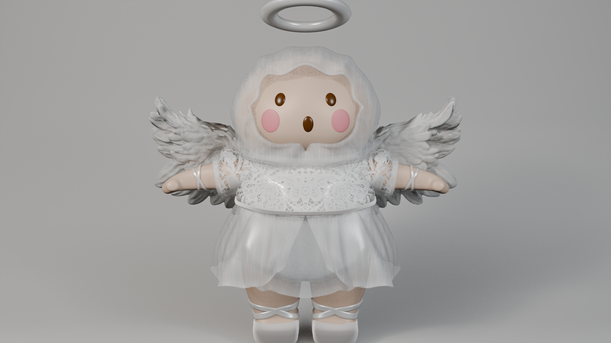
Im,
○○○ 학생
3D와 AI로 캐릭터를 만드는 미디어커뮤니케이션 전공.
다음 무대는 기업 홍보실입니다.
About Me

3D와 AI로 캐릭터를 만드는 미디어커뮤니케이션 전공.
다음 무대는 기업 홍보실입니다.

"보험처럼 나를 지켜주는 수호천사." 삼성화재 '보험 선물하기'를 위한 캐릭터 보물이를 기획했습니다. 선물상자를 깨고 나온 아기 수호천사 — 이름은 '보험'과 '선물'에서 따왔습니다. (가상 수업 과제이며 실제 삼성화재와 무관합니다.)
Google Mixboard로 아이데이션. 삼성화재 키컬러(하늘색)를 캐릭터에 반영했습니다.
GRS 단축키도 낯설던 첫 주에서 시작해, 모디파이어로 형태를 잡고 캐릭터 하나를 끝까지 완성했습니다.
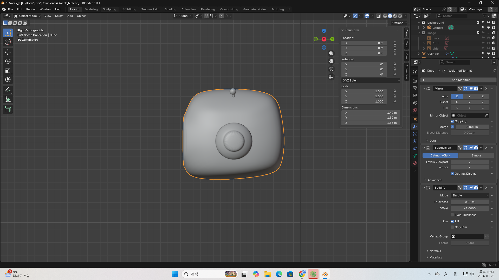
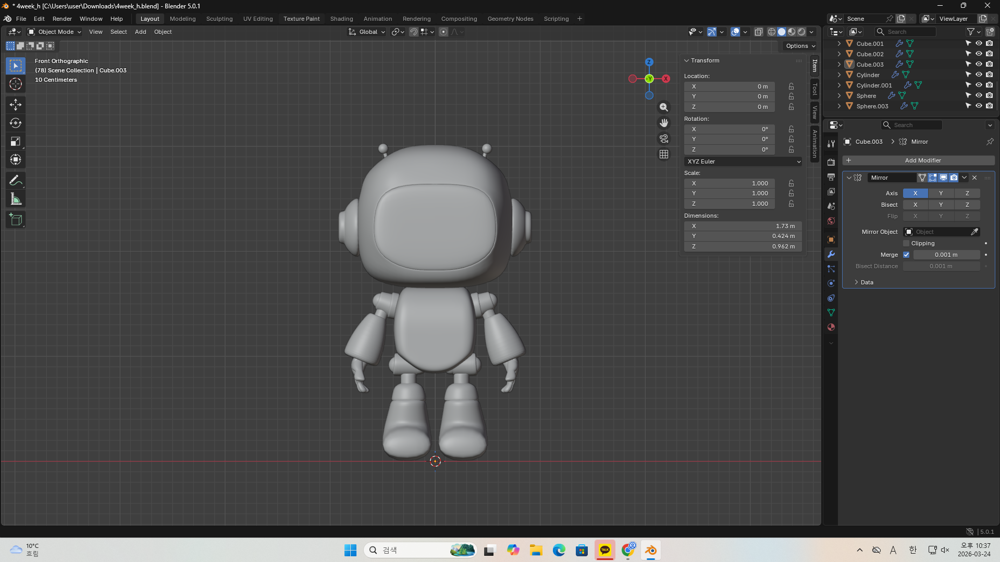
"머리 하나를 만드는데도 이렇게 디테일이 들어가는 걸 깨달았습니다."
Hyper3D로 아이디어를 즉시 입체로 생성해 형태를 탐색하고 Blender로 다듬었습니다. (AI 3D 생성 = 텍스트·이미지로 3D 모델을 자동 생성하는 기술)
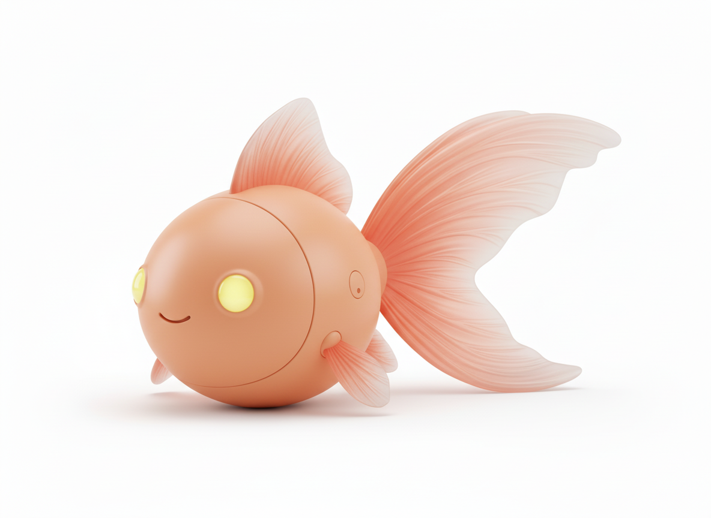
"Peach Goldfish companion robot" 프롬프트로 생성한 초기 탐색안.
Metal · Plastic · Glass · Emission을 파츠별로 분리하고, 조명을 설계해 질감을 입혔습니다.
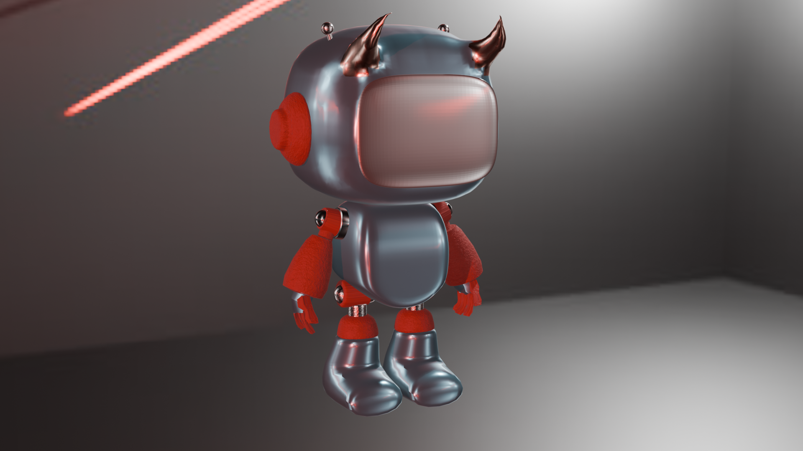
EEVEE Next로 렌더. 브론즈·크롬·실버 등 재질마다 다른 질감을 구분했습니다.
캐릭터에 뼈대를 심어(리깅) 움직임을 만들고, Bezier 보간으로 자연스러운 가감속을 연출했습니다. Mixamo로 Walking → Kick 시퀀스도 조합했습니다.
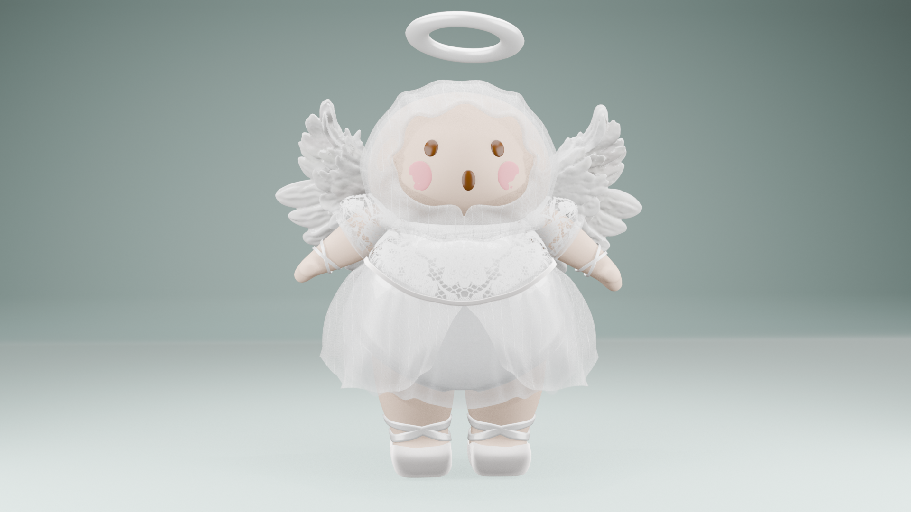
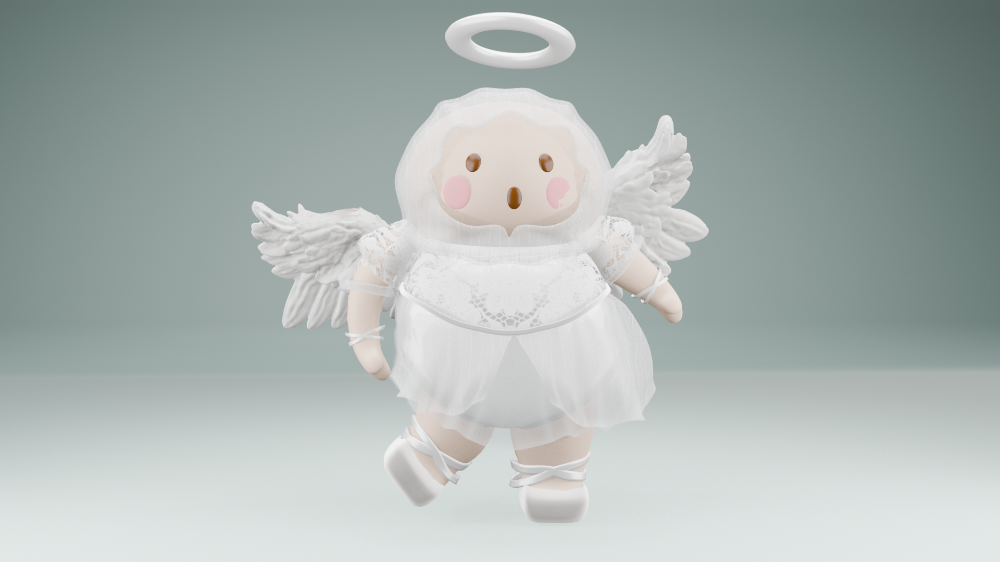
"로봇엔 수동 리깅이 적합하고, 사람 캐릭터엔 Rigify가 압도적으로 효율적입니다."
멀티앵글로 렌더링하고, Kling AI로 영상을, Suno AI로 BGM을 만들어 보물이를 하나의 작품으로 완성했습니다.
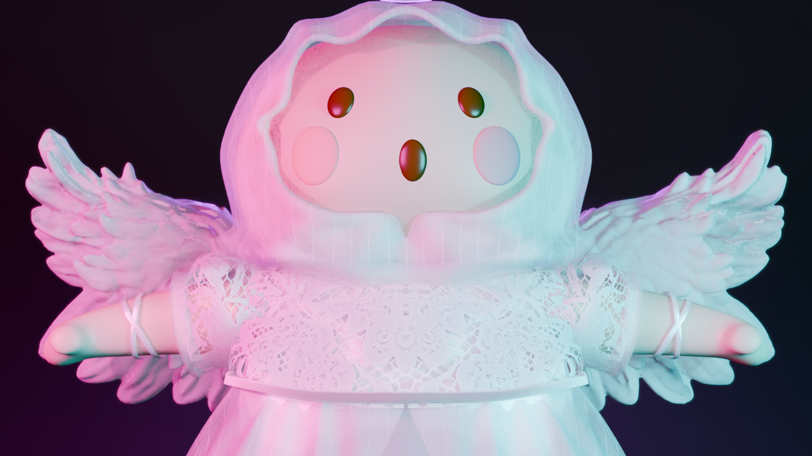

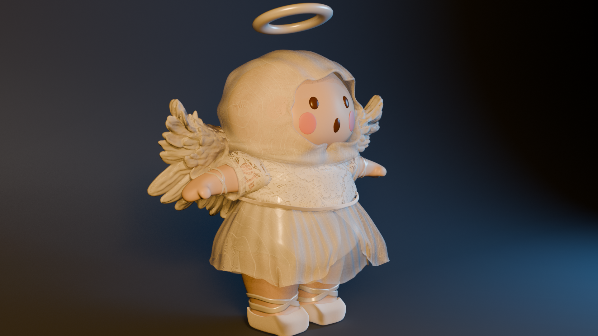
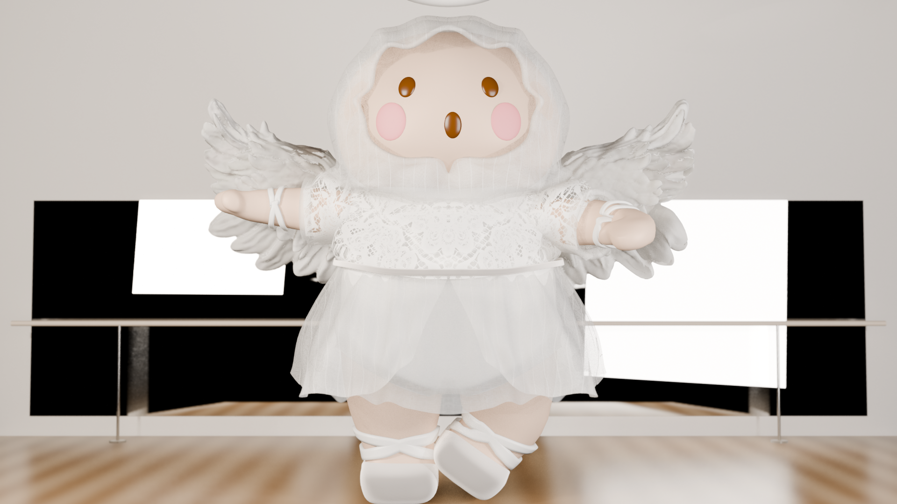
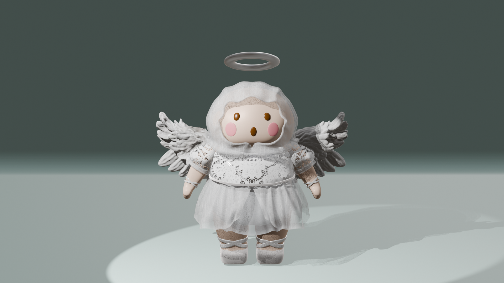
Rendered in Blender · Video by Kling AI · Music by Suno AI · Mixamo · Hyper3D
Made with Blender · Hyper3D · Kling AI · Suno AI · Mixamo · Rigify